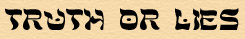
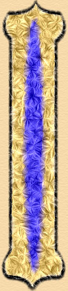
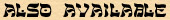

 Kitab al-Ibar (or, Book of Examples) by Ibn Khaldun | ||
 | Ibn Khaldun knows that from sultans to people in the street, everyone seeks to know history. But many gossips spread untrue stories about the past, and "the pasture of stupidity is unwholesome to mankind." Ibn Khaldun's introductory volume, The Muqaddima, describes how to compare accounts of an event to reveal the truth. It describes a "new science of civilization" and asks such questions as:  | |